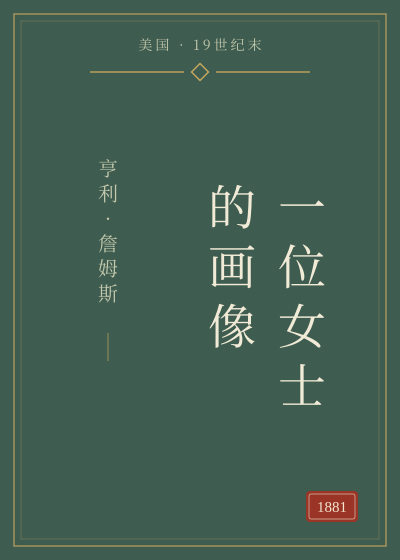
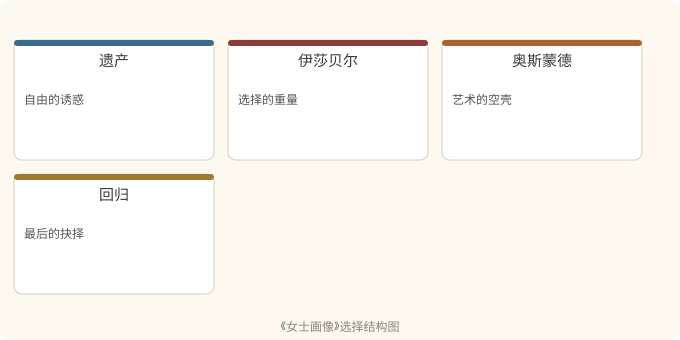

一位女士的画像
一、基本信息
| 作者 | 亨利·詹姆斯 |
|---|---|
| 成书/出版 | 1881年（Britannica：his masterpiece, The Portrait of a Lady (1881)） Henry James (American writer) — Encyclopaedia Britannica（百科全书） |
| 国别/地区 | 美国 |
| 时代 | 现当代 · 19世纪末 |
| 体裁 | 长篇小说 |
| 语言 | 英语 |

《女士画像》选择结构图（主题·结构图）
二、创作背景
Britannica（B297）：'James ended this first phase of his career by producing his masterpiece, The Portrait of a Lady (1881)'——写'来自奥尔巴尼的年轻女性'带到欧洲的'狭隘的地方主义与自命'（B297）；'As a picture of Americans moving in the expatriate society of England and of Italy, this novel has no equal'（B297）。
作者（B297）：'a key transitional figure between literary realism and Modernism'。
三、内容脉络
伊莎贝尔·阿切尔继承巨款后误嫁吉尔伯特·奥斯蒙德——自由意志的悲剧（通说待核）。
四、主要人物表
| 人物 | 身份 | 说明 |
|---|---|---|
| 伊莎贝尔·阿切尔 | 美国女继承 | （B297） |
| 吉尔伯特·奥斯蒙德 | 收藏家 | （通说待核） |
五、主题与艺术特点
- '自由意志'的悲剧：选择的重量（通说待核）。
- 美国'天真'与欧洲'世故'的碰撞（B297 语境）。
- 国际小说（international theme）的典范（通说待核）。
六、影响与评论
- Britannica：'his masterpiece'；'this novel has no equal'（B297）。
Henry James (American writer) — Encyclopaedia Britannica（百科全书） - 作者页：'key transitional figure between literary realism and Modernism'（B297 作者级）。
Henry James (American writer) — Encyclopaedia Britannica（百科全书）
七、阅读建议
难点
- 长句与心理视角。
- 国际主题（international theme）背景。
- 《一位女士的画像》（人民文学出版社/上海译文版本，通说待核）。
- 英文原版（公有领域）。
亨利·詹姆斯入门首选。
八、待核实
- 1881年出版（Macmillan/Houghton Mifflin说）核对。
- 伊莎贝尔/奥斯蒙德人名核对。
- 'international theme'术语出处待核。
本页主要来源
亨利·詹姆斯的其他收录作品：一位女士的画像